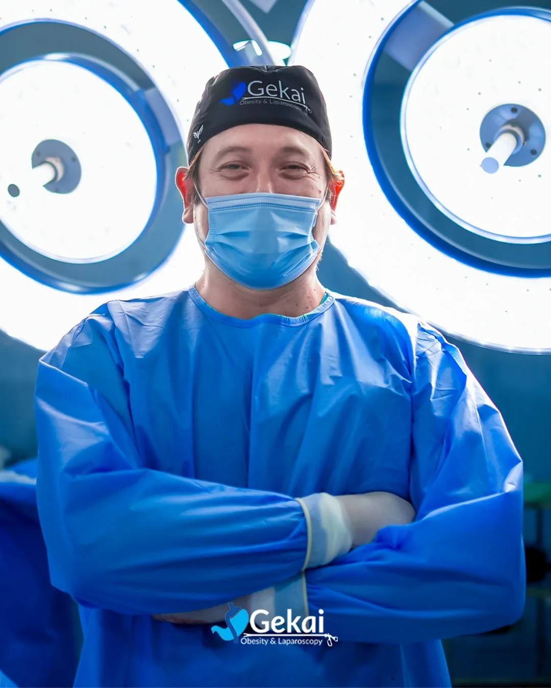
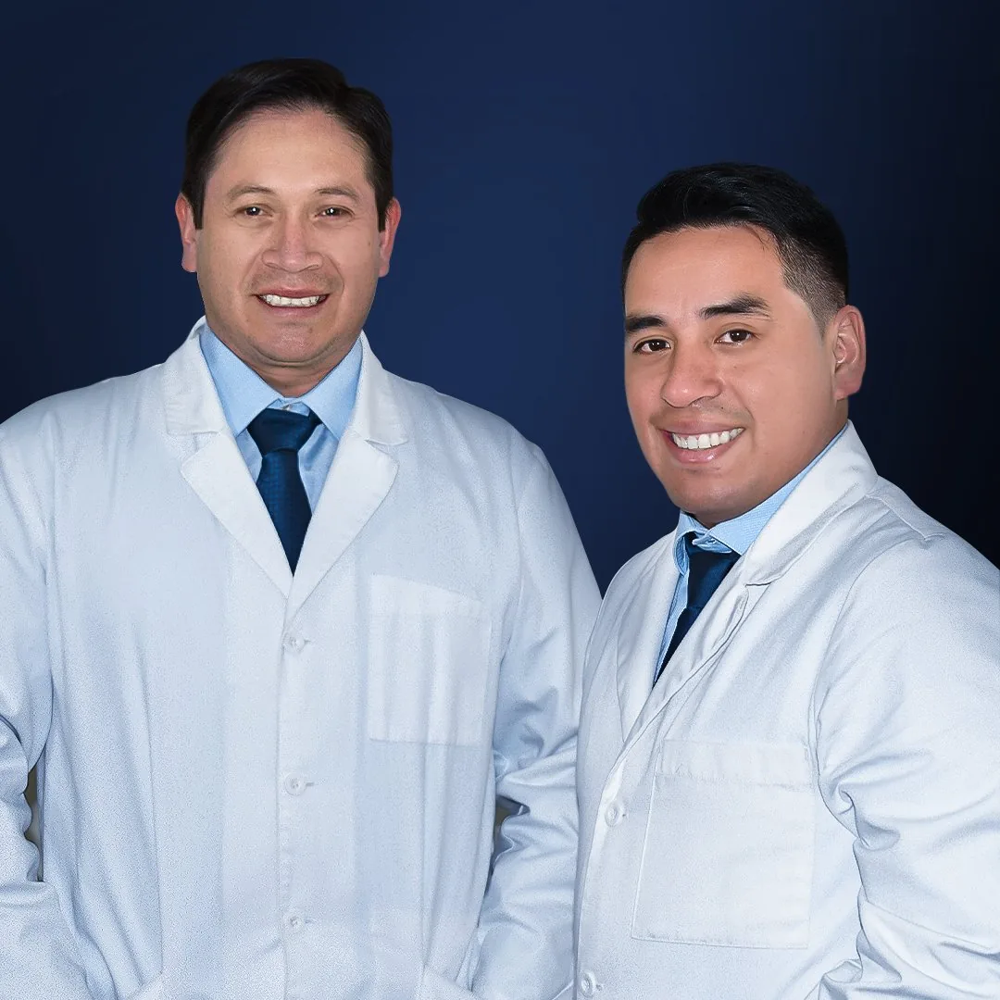
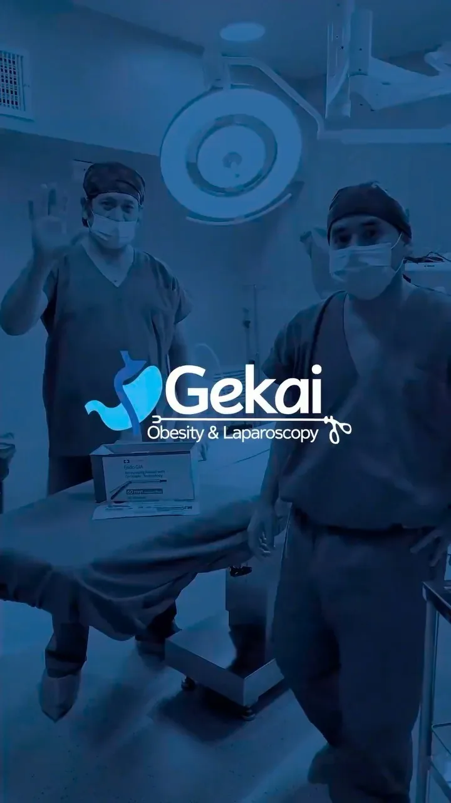

01 / CIRUGÍAUN ABORDAJE INDIVIDUAL
Cirugía bariátrica
Conoce opciones como manga gástrica y bypass gástrico. Su elección requiere evaluación, preparación y seguimiento profesional.
Quiero conocer el proceso ↗CIRUGÍA BARIÁTRICA & BALÓN ALLURION
Tu primer paso: una conversación.
Un equipo dispuesto a escucharte.
En Gekai te acompañamos a conocer tus opciones y preparar una decisión informada sobre tu salud.
Personas que cuidan de personas.
Gekai · Obesity & Laparascopy

Acompañarte.
Desde el primer paso.
OPCIONES PARA CONVERSAR
Cada persona tiene una historia diferente. Conocer las alternativas es el comienzo; la evaluación médica define el siguiente paso.

01 / CIRUGÍAConoce opciones como manga gástrica y bypass gástrico. Su elección requiere evaluación, preparación y seguimiento profesional.
Quiero conocer el proceso ↗
02 / BALÓN GÁSTRICOUn balón gástrico temporal dentro de un programa supervisado. Conversa con el equipo sobre la evaluación, los beneficios y los riesgos.
Quiero información sobre Allurion ↗CERCA DE TI, DESDE EL INICIO
Somos un equipo enfocado en cirugía bariátrica y laparoscópica. Creemos en escuchar tus inquietudes, explicar las alternativas y acompañar el proceso con atención personalizada.
Tus preguntas son parte de la conversación.
Una valoración profesional, antes de decidir.
Preparación y seguimiento en cada etapa.
ASÍ SE VIVE GEKAI
INFORMARTE TAMBIÉN ES CUIDARTE
No necesitas tener todas las respuestas para dar el primer paso.
La elección empieza con una evaluación médica individual. En ella puedes conversar sobre tus objetivos, las alternativas y sus beneficios y riesgos.
Sí. Puedes conocer los procedimientos y preparar tus preguntas. Informarte no implica comprometerte con un tratamiento.
Solicita al equipo información vigente sobre costos y qué incluye cada opción. Esta página no genera cotizaciones ni confirma disponibilidad.
No. Cada experiencia es diferente. Los resultados y riesgos deben conversarse con el profesional durante la evaluación; no se garantiza una pérdida de peso individual.
EMPECEMOS POR CONVERSAR
Conoce las alternativas y conversa con el equipo Gekai sobre tu siguiente paso.
Contactar por Instagram ↗Abre nuestro perfil y pulsa «Mensaje». La cita se coordina directamente con el equipo.
Elige un tema para ver orientación general.
Respuestas informativas predefinidas. No envía datos, agenda citas ni determina si un tratamiento es adecuado para ti.